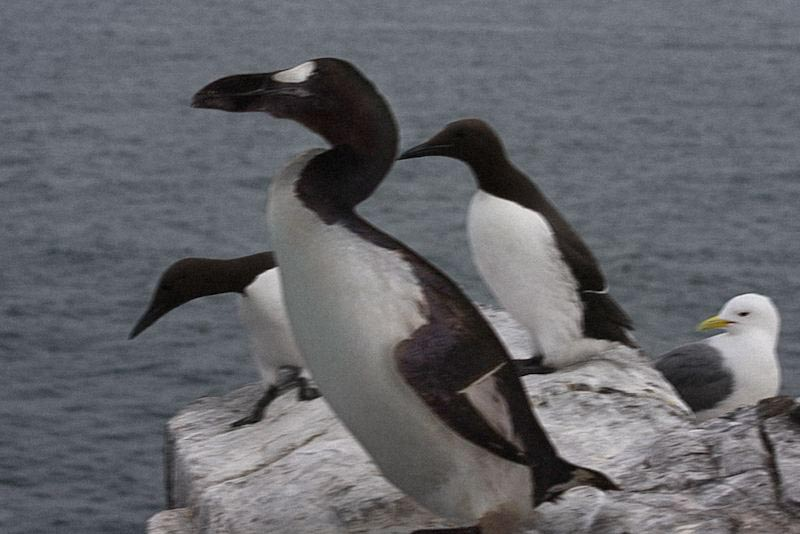
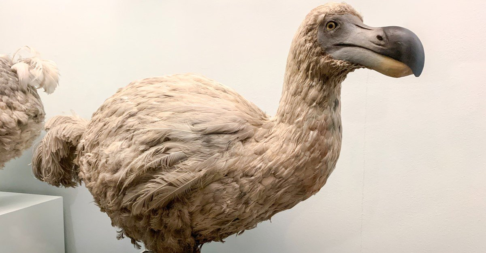
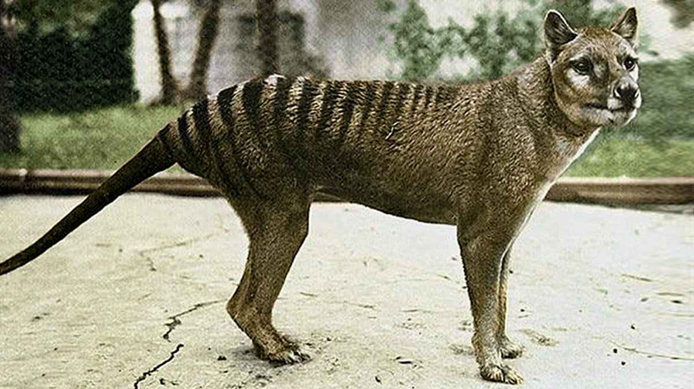
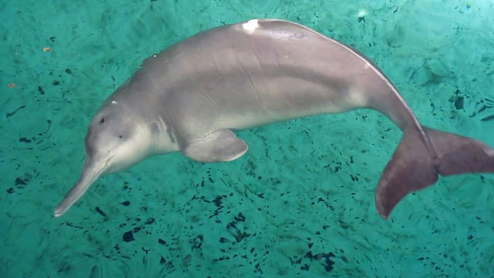
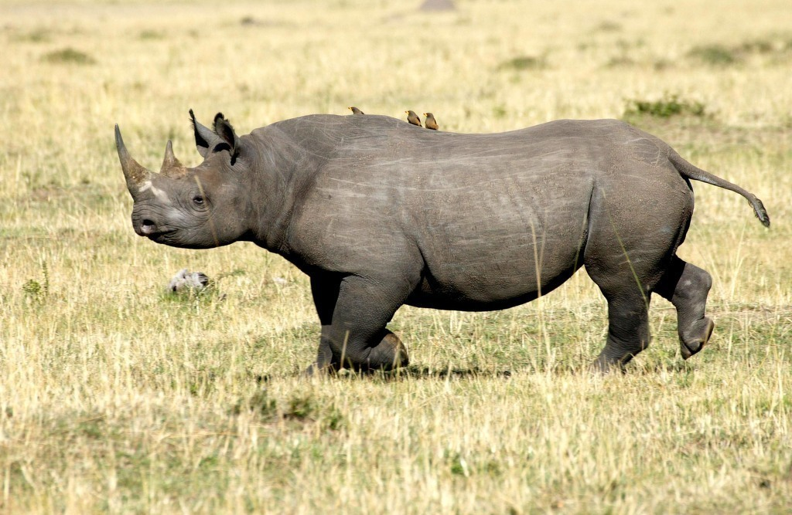
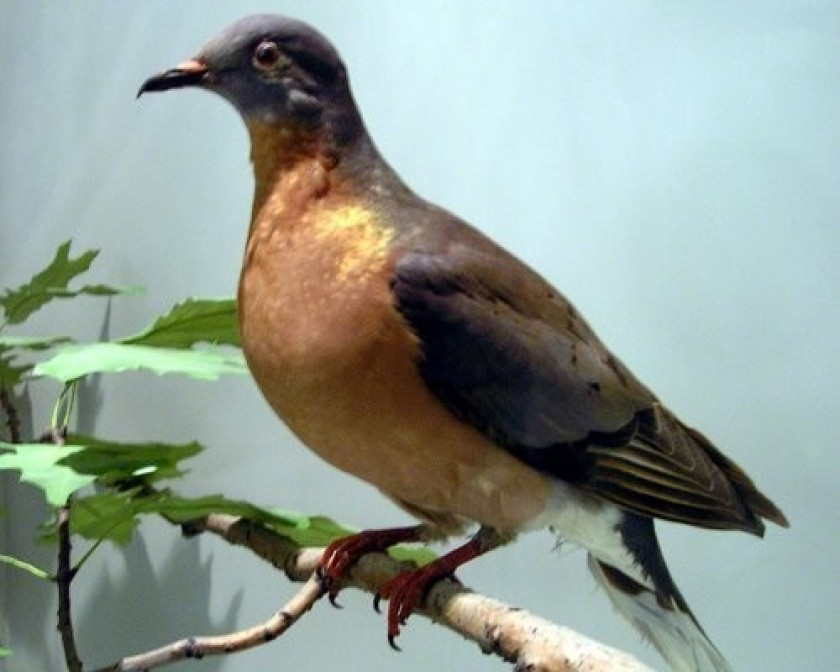
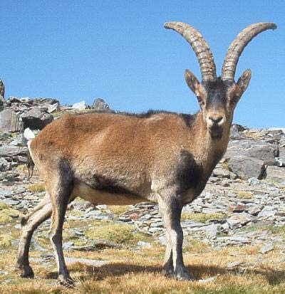
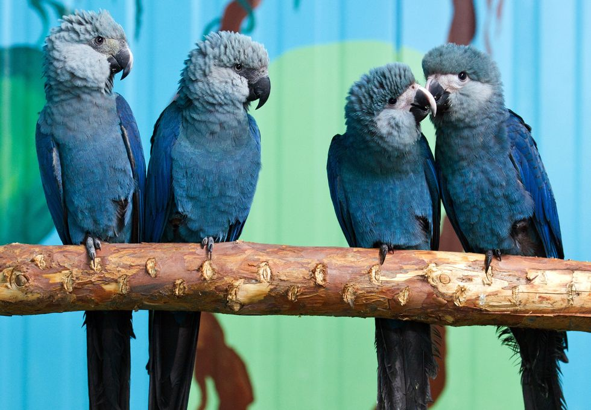

Welcome!
Today, I'm going to tell you about the extinct animals in our world!
About Me
Great Auk

Dodo

Tasmanian Tiger

Baiji White Dolphin

West African Black Rhinoceros

Passenger Pigeon

Pyrenean Ibex

Woolly Mammoth

Sabre-Toothed Cat

The Spix Macaw

Try and protect as many animals as you can. Thank You!